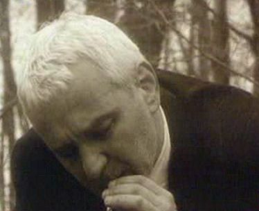

Compositing Effects for an art feature film
“Everyday, God kisses us on the mouth” 2001 (IMDB)
Freelancing for Abis Studio Bucharest; 3D animation Fireflies and compositing effects
Awards:
Dark, Gothic, new Romanian cinema with a touch of the fairytale and touches of colour to its black and white world: a butcher out of jail cannot resist killing, goes on the rampage to get his wife's killers, but is magically redeemed by love.
Someone who kills animals is a butcher, and someone who kills people is called a murderer. Dumitru (40) is both. When he is released from prison, he resorts to his old practices on the way home by train: a card game with gypsies gets out of hand, leading to a death. Initially he seems to get away with it. Back home, his younger wife is waiting for him. Then he finds out that his brother has made her pregnant. Driven by revenge, another murder follows, and that won't be the last: Dumitru becomes a serial killer. His life is unbearable. But when he wants to die, he finds out he can't: God has other plans for him. We have to hope that Everyday God Kisses Us on the Mouth does not serve as a parable for the moral situation of Romania. The power of the film is partly to be found in the pitch black portrayal of the convinced brute even if it looks as if other emotions are possible for the butcher towards the end. Due to the fact that Dragin (whose Long Journey by Train was seen in 1999 in the 'After the Fall of the Wall' programme) chose largely for black and white and a murky style with magic moments, he places his film in a long tradition of realistic fairy tales from Eastern Europe.
Dumitru is a two-face killer: he kills animals and is called a hunter, and kills people, and branded as an assassin...
Director: Sinisa Dragin
Writers: Ioan Carmazan (story), Sinisa Dragin
Stars: Dan Condurache, Ana Ciontea and Horatiu Malaele
Moise Constantin - Pyrotechnician (as Constantin Moise)
Silviu Marianciuc - Special Effects
Sebastian Ungureanu - Compositing and FX

